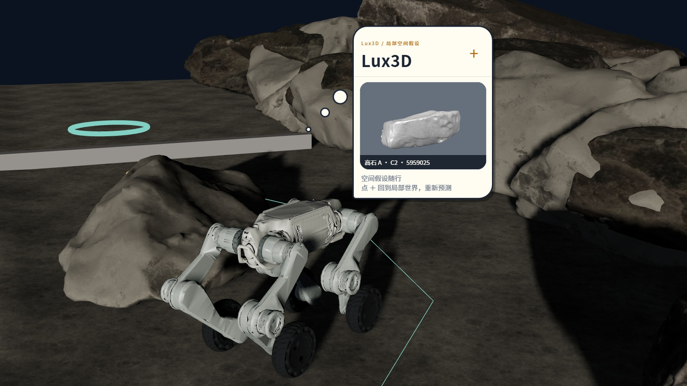
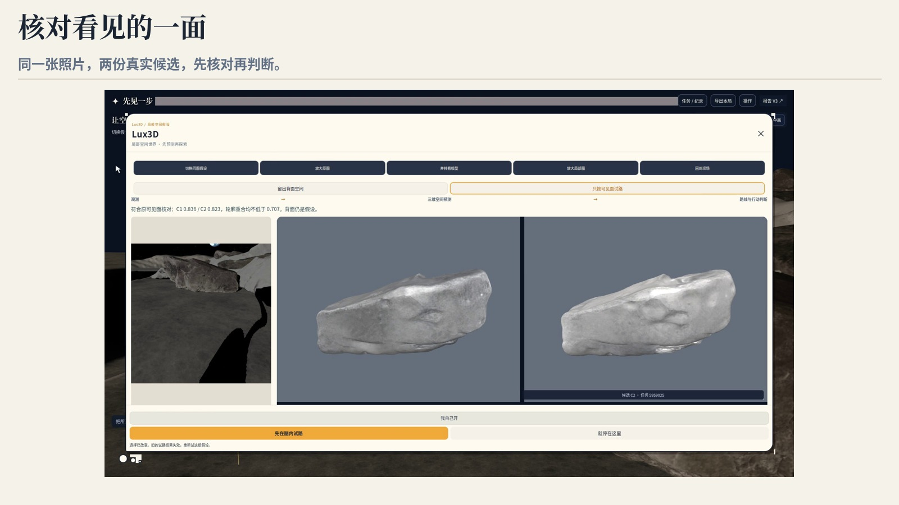
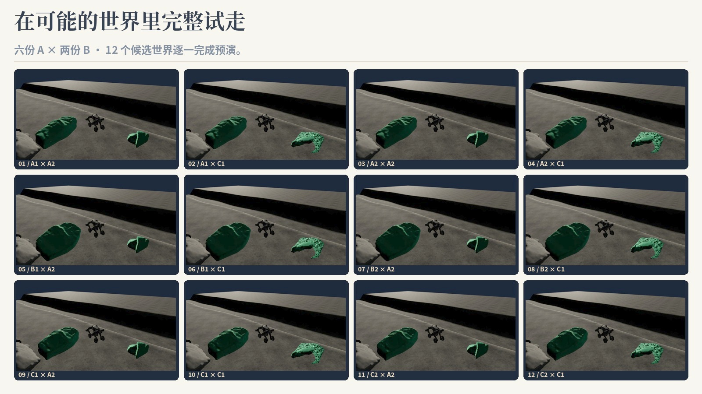

给轮腿机器人空间前额叶，先预测再探索
看见一面，
先想一步。
先见一步用 Aholo Lux3D 的三维先验构建局部世界模型，作为轮腿机器人“先想后走的空间前额叶”：从照片提出形状假设，放回通道试路，再决定走、补看或停。
任务与操作引导 · 留下初判 → 自选手控、想象、补看或停车
二维观测→空间想象→预测→探索
一张照片，返回整块 3D真实 Lux3D 返回
这张照片和这个模型，从哪里来？
二者来自同一个真实 Lux3D 任务 5958685，按原字节保留。这里直接加载返回的原 GLB，由官方 @manycore/aholo-viewer 1.14.0 显示。下载原模型 · 照片、模型与来源记录 · 继续逛模型陈列室
Lux3D 的训练来源与局部世界建模分工见事实与来源 ↗。

Lux3D 模型判断 × 轮腿机器人行动双线交汇 / 高石判断，矮坎执行
高石先想，
矮坎迈腿。
未知背面需要几何假设，已经看清的门槛需要跨越能力。空间想象与轮腿各自解决一步。

02 / 轮腿执行
看清门槛，亲手迈过去。
- 常规与高姿态轮行
- 0 / 90
- 逐轮跨越干净通过
- 24 / 24
校准数据限原 M20 仿真的 10、12、15 cm 三个离散高度。四腿的 12 个主要动作由玩家触发。
查看轮腿校准与同路示例 →一个任务 / 从完整形状到实际通行
你的判断，决定下一步。
Lux3D 预测局部空间，BeforeStep 在候选世界中检验路线与行动，再让机器人探索。
从空间想象，回到 M20 的行动
先核对，再预演。
让每一步有依据。
Lux3D 提供完整形状的可能。BeforeStep 用实际观测筛选这些形状，再在模型构成的世界里试走。

01 / 核对看见的一面模型得和照片对得上。
同一眼照片返回不同候选。依据原观测保留吻合的模型，也公开被拒结果。

02 / 在可能的世界里试走把同一条路线，走完整。
R1 的六份 A 模型与两份 B 模型组成十二个世界，让机器人在每个组合里预演。
 03 / 选择下一步行动
03 / 选择下一步行动执行、补看，或停下。
模型预演提供出发的依据；信息不足时可以现场补看、选择绕行或主动停车。每一步由你决定。
三图原始来源与结果 · 最新 1080p 连续原片、补拍与五张图 ↗
491累计真实生成任务V5 Beta 归档节点：467
累计 460 成功 GLB / 31 失败；V5 Beta 原稿记录 438 成功 / 29 失败。R1 一眼 112.84 仿真秒到达；后续收紧验证 3 到达、14 停车、0 碰撞，完整成功与失败分别保留。
查看实验证据 →B 站主宣传片 / 作者已发布
先看轮腿机器人怎样走，
再来亲自操作。
机器人视角、Lux3D 脑内完整模型与轮腿动作，以作者已发布的 B 站视频为主。完整实验影片与章节继续保留。
B 站 · 主宣传视频基于 Lux3D 局部空间信息感知的
基于 Lux3D 局部空间信息感知的
云深处山猫 M20 月面探索方案
看一面、想一想、迈一步。看完短片，试着驾驶同一台轮腿机器人完成四站任务。
继续探索作品
转一转模型，
也查一查证据。
模型、原运行、正式报告和代码，在这里接着看。